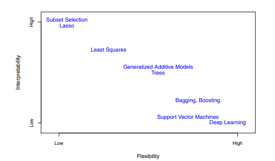
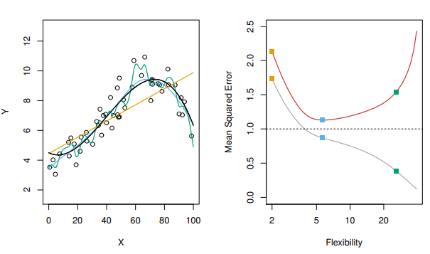
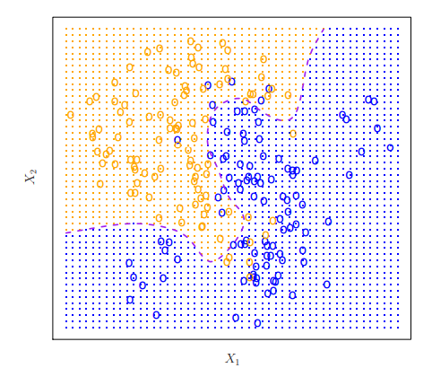
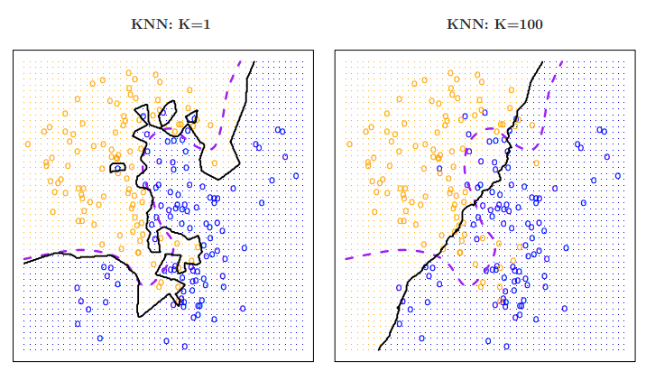

library (MASS)
library (ISLR2)
Attaching package: 'ISLR2'The following object is masked from 'package:MASS':
BostonIntegrantes: María José Bustamante - Nicolás Jadán
Carrera: Biomedicina
Ayuda a determinar si existe una relación entre las variables de interés para su futura aplicación.
Variable de entrada (input): Suelen denotarse como “X” y con un subídice para diferenciarlas. Se conocen como; predictores, características y variables independientes.
Variable de salida (output): Se denota como “Y”. Conocida generalmente como variable dependiente o de respuesta.
El aprendizaje estadístico se refiere a un conjunto de enfoques para estimar f que es una función fija pero desconocida que representa información sistemática que brinda X acerca de Y.
Predicción
Generalmente se suele tener los datos de entrada pero la parte difícil es obtener la salida. Esto se puede solucionar usando:

f: estimación para f
y: predicción resultante
Un ejemplo se muestra en la siguiente imagen:

El gráfico muestra los ingresos en función de los años de educación y antigüedad en el conjunto de datos Renta. La superficie azul representa la verdadera relación subyacente entre los ingresos y los años de educación y antigüedad, que se conoce porque los datos son simulados. Los puntos rojos indican los valores de estas cantidades para 30 individuos.
La exactitud de y depende de dos tipos de error:
Error reducible: Se refiere a la precisión de las predicciones que puede mejorar implementando mejores algoritmos para estimar f(X).
Error irreducible: Aunque fuera posible obtener la mejor estimación de f(X), seguirá existiendo un cierto nivel de incertidumbre ya que siempre existen dependencias de la variable objetivo con otras variables que no se están considerando o simplemente por procesos debidos al azar. Esto es lo que se conoce como error irreducible. Siempre proporcionará un límite superior en la precisión de la predicción para Y.
Inferencia
Para comprender la asociación entre Y y Xp se pueden plantear las siguientes preguntas:
¿Qué predictores se asocian a la respuesta?
¿Cuál es la relación entre la respuesta y cada predictor?
¿Puede resumirse adecuadamente la relación entre Y y cada predictor mediante una ecuación lineal, o la relación es más complicada?
Algunos modelos podrían utilizarse tanto para la predicción como para la inferencia, dependiendo delobjetivo final. Por ejemplo, los modelos lineales permiten una inferencia relativamente sencilla y predecible entre modelos lineales, pero puede que no produzcan predicciones tan precisas como otros enfoques. Por el contrario, algunos de los enfoques no lineales pueden brindar información bastante precisas para Y.
Métodos paramétricos: Abarcan un enfoque basado en modelos de dos pasos:
Suposición sobre la forma funcional para el modelo. Ej: f es lineal en X.
Después de seleccionar el modelo se requiere de un procedimiento que utilice los datos de entrenamiento para ajustar o entrenar el modelo.
El método más común para ajustar un modelo es el de mínimos cuadrados.
Ejemplo:

El modelo paramétrico reduce el problema para estimar f ya que se presenta como un conjunto de parámetros en el modelo lineal caso contario se debería ajustar f a una función arbitraria.
La desventaja de este modelo es que cuando el modelo elegido se aleje demasiado la estimación será deficiente y para resolver esto se debería estimar una mayor cantidad de parámetros lo que a su vez podría provocar un sobreaajuste de datos.
Métodos no paramétricos: Buscan una estimación de f que se acerque lo más posible a los puntos de datos sin que sea demasiado aproximada. Se ajustan fácilmente a una gama más amplia de formas posibles de f.
Una desventaja que presentan es que se necesita un gran número de observaciones para obtener una estimación precisa de f.
Existen métodos menos flexible o menos restrictivos en el sentido de que sólo pueden producir una gama relativamente pequeña de formas para estimar f.

Modelo restrictivo: Es útil cuando el principal interés es la inferencia, debido a que es más interpretable.
Modelos flexibles: Pueden guiar a estimaciones muy complicadas de f en las que es difícil comprender cómo se asocia cualquier predictor con la respuesta.
lasso: es un enfoque menos flexible y más interpretable que la regresión lineal proque en el modelo final la respuesta sólo estará relacionada con el modelo final.
Modelos aditivos generalizados (GAM): Más felxibles que la regresión lineal, pero menos interpretables ya que la relación entre cada predictor y respuesta se representa mediante una curva.
Modelos no lineales: bagging, boosting, máquinas de soporte de vectores y redes neuronales.
Supervisado: Para cada observación de los predictores hay una respesta asociada. Permite predecir con exactitud la prespuesta para futuras predicciones o comprender mejor la relaxción entre predictores y respuesta.
No supervisado: Se carece de una variable de respuesta que pueda supervisar el análisis. Es decir no hay una respuesta asociada al predictor, por lo que no e sposible ajustar a un modelo de regresión lineal.
Variables cuantitativas: Toman valores numéricos. Ej: Estatura, edad o ingresos.
Variables cualitativas: Toman valores en clases o categorías. Ej: Estado cívil, marcas de productos o diagnósticos.
La regresión logística es un método de clasificación binaria. Es bastante común seleccionar los métodos de aprendizaje estadístico en función de si la respuesta es cuantitativa o cualitativa, es decir, se puede usar la regresión lineal cuando es cuantitativa y la regresión logística cuando es cualitativa.
En en estadística: ningún método domina a todos los demás en todos los conjuntos de datos posibles.
Para evaluar el rendimiento de un método de aprendizaje estadístico se requiere cuantificar hasta qué punto el valor de respuesta predicho para una observación dada se aproxima al valor de respuesta verdadero para esa observación.
Error cuadrático medio (MSE): será pequeño si las respuestas predichas están muy cerca de las respuestas verdaderas, y será grande si para algunas de las observaciones, las respuestas predichas y verdaderas difieren sustancialmente.
Se calcula utilizando los datos de entrenamiento que se usaron para jaustar el modelo

En la imagen en la parte izquierda se puede ver que a medida que aumenta el nivel de flexibilidad, las curvas se ajustan mejor a los datos observados. La curva verde es la más flexible y se ajusta muy bien a los datos; sin embargo, observamos que se ajusta mal a la f verdadera (mostrada en negro) porque es demasiado ondulada.
En la parte derecha La curva gris muestra el MSE medio de entrenamiento en función de la flexibilidad, o más formalmente de los grados de libertad (flexibilidad de la curva). Los cuadrados naranja, azul y verde indican los MSE asociados a las curvas.
En este ejemplo, la verdadera f no es lineal, por lo que el ajuste lineal naranja no es lo suficientemente flexible para estimar bien f. La curva verde tiene el MSE de entrenamiento más bajo de los tres métodos, ya que corresponde al más flexible de ellos. El spline de suavizado representado por la curva azul se aproxima al óptimo.
En la parte derecha de la figura, a medida que aumenta la flexibilidad del método de aprendizaje estadístico, observamos un descenso monótono en el tiempo de entrenamiento. Es decir, a medida que aumenta la flexibilidad del modelo aumenta, el MSE de entrenamiento disminuirá.
Cuando un método determinado produce un MSE de entrenamiento pequeño pero un MSE de prueba grande, se dice que se están sobreajustando los datos.
Para minimizar el error de prueba esperado se requiere seleccionar un método de aprendizaje estadístico que consiga simultáneamente baja varianza y bajo sesgo.
Varianza: Se refire a la cantidad en la que f cambiaría si la estimación se realizara usando un conjunto de datos de enttrenamiento diferente. Lo ideal es que la estimación de f no varíe demasiado. En general los métodos estadísticos más flexibles tienen mayor varianza.
Sesgo: Es el error que se introduce al aproximar un problema de la vida real a un modelo muy simple o sencillo. Es poco probable que un problema de la vida real tenga una relación lineal tan sencilla, por lo que realizar una regresión lineal dará lugar a cierto sesgo en la estimación de f.
La varianza es intrínsecamente una cantidad no negativa, y el sesgo al cuadrado también es no negativo.
A medida que utilicemos métodos más flexibles, la varianza aumentará y el sesgo disminuirá.
Un buen rendimiento del conjunto de prueba de un método de aprendizaje estadístico requiere una varianza baja, así como un equilibrio entre sesgo y varianza.
Las tasas de error resultantes son de especial interés para la aplicación del clasificador a observaciones de prueba que no fueron utilizadas en el entrenamiento. Un buen clasificador es aquel en el que el error de prueba es mínimo.
Asigna cada observación a la clase más probable dados sus valores predictores. En un problema de dos clases en el que sólo hay dos posibles valores de respuesta, el clasificador de Bayes corresponde a la predicción de la clase uno si Pr(Y = 1|X = x0) > 0,5, y la clase dos en caso contrario.

En la imagen los círculos naranja y azules corresponden a observaciones de entrenamiento que pertenecen a dos clases diferentes.
Para cada valor de X1 y X2, existe una probabilidad diferente de que la respuesta sea naranja o azul.
La región sombreada en naranja refleja el conjunto de puntos para los que Pr(Y = naranja|X) es superior al 50 %, mientras que la región sombreada en azul indica el conjunto de puntos cuya probabilidad es inferior al 50 %.
La línea discontinua morada representa los puntos en los que la probabilidad es exactamente del 50 %. Esto se denomina el límite de decisión de Bayes.
Es utilizado para trabajar con datos reales. Es un algoritmo no supervisado donde “K” representa el número de “grupos” (clusters) a clasificar y el K-neighbor más cercano “K” representa el número de “vecinos” considerados en los “n” grupos del clasificador. En otras palabras busca en las observaciones más cercanas a la que se está tratando de predecir y clasifica el punto de interés basado en la mayoría de datos que le rodean.

La imagen muestra dos ajustes KNN a los datos simulados, utilizando K = 1 y K = 100. Cuando K = 1, el límite de decisión es excesivamente flexible y encuentra patrones en los datos que no se corresponden con el límite de decisión de Bayes. Esto corresponde a un clasificador que tiene un sesgo bajo pero una varianza muy alta. A medida que K aumenta, el método se vuelve menos flexible y produce una frontera de decisión cercana a la lineal. Esto corresponde a un clasificador de baja varianza pero alto sesgo. En este conjunto de datos simulados, ni K = 1 ni K = 100 dan buenas predicciones: tienen tasas de error de prueba de 0,1695 y 0,1925, respectivamente.
Librerías a usar:
MASS: colección de conjunto de datos y funciones.
ISLR2: Conjunto de datos asociados al libro de estudio.
library (MASS)
library (ISLR2)
Attaching package: 'ISLR2'The following object is masked from 'package:MASS':
BostonLa biblioteca ISLR2 contiene el conjunto de datos de Boston, que registra el medv (valor medio de la vivienda) de 506 secciones censales de Boston. Intentaremos predecir medv utilizando 12 predictores como rm (número medio de habitaciones por casa) edad (edad media de las casas) y lstat (porcentaje de hogares con un estatus socioeconómico bajo).
head(Boston) crim zn indus chas nox rm age dis rad tax ptratio lstat medv
1 0.00632 18 2.31 0 0.538 6.575 65.2 4.0900 1 296 15.3 4.98 24.0
2 0.02731 0 7.07 0 0.469 6.421 78.9 4.9671 2 242 17.8 9.14 21.6
3 0.02729 0 7.07 0 0.469 7.185 61.1 4.9671 2 242 17.8 4.03 34.7
4 0.03237 0 2.18 0 0.458 6.998 45.8 6.0622 3 222 18.7 2.94 33.4
5 0.06905 0 2.18 0 0.458 7.147 54.2 6.0622 3 222 18.7 5.33 36.2
6 0.02985 0 2.18 0 0.458 6.430 58.7 6.0622 3 222 18.7 5.21 28.7?Boston: Para obtener información sobre el conjunto de datos.
lm(): Para ajustar un modelo de regresión lineal simple.
Predictor: Istat
Respuesta: medv
La sintaxis básica es lm(y ∼ x, datos), donde y es la respuesta, x es el predictor y datos es el conjunto de datos en el que se mantienen estas dos variables.
Si escribimos lm.fit, aparecerá información básica sobre el modelo.
Para obtener información más detallada, utilice summary(lm.fit). Se obtienen los valores p y los errores estándar de los coeficientes, así como el estadístico R2
y el estadístico F del modelo.
Podemos utilizar la función names() para averiguar qué otras piezas names() de información se almacenan en lm.fit.
Es más seguro utilizar las funciones extractoras como coef() para acceder a ellas.